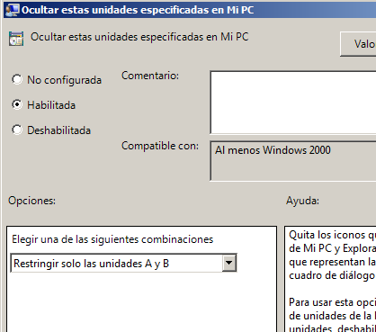

- Módulo: Sistemas Operativos
- Título del trabajo A4: PDC Politicas o directivas grupo
- Componentes del grupo: Ariadna jiménez Rodríguez
- Curso Académico: 2013/2014
- Fecha de entrega: 7 de Mayo de 2014
Debemos ir a "Administración de directivas de grupo" y desplegamos "Objetos de Directiva de grupo" y editamos el GPO.
buscamos la Directiva de grupo que queremos modificar y abrimos las propiedades para modificar la configuración.
Ejemplo de los 2 grupos:

Quitar el menú Ejecutar del menú Inicio
Vamos a configuración de Usuario y nos vamos a plantilla administrativas, menú de Inicio y barra de tareas y quitamos el menú "Ejecutar del menú de Inicio"
Ocultar el el icono de Mis sitios de red del escritorio
Configuración de Usuario y vamos a plantilla administrativas, escritorio y ocultamos el icono de Mi sitios de Red del escritorio:
Prohibir el acceso al Panel de control:
Conf. de usuario, plantilla administrativa, panel de control y habilitar la prohibición.
Quitar el icono Mis sitios de red del menú inicio
Conf. de usuario, plantilla administrativa, Menú Inicio y barra de tareas:
Quitar Conexiones de red del menú Inicio:
Conf. de usuario, plantilla administrativa, Menú Inicio y barra de tareas:
Ocultar unidades específicas en Mi PC:
Conf. de usuario, plantilla administrativa, componentes de Windows, explorador de Windows:
Habilitar Quitar “Conectar a unidad de red” y “Desconectar de unidad de red":
Conf. de usuario, plantilla administrativa, componentes de Windows, explorador de Windows:

La práctica no ha sido difícil de realizar, lo único complicado era buscar lo que se quería buscar ya que era una lista muy larga y a veces costaba encontrarlo rápidamente.